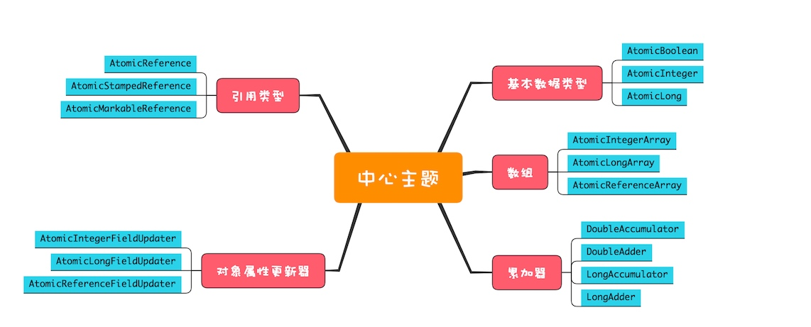

对于简单的原子性问题，JDK包装了一系列的实现原子类，相对于互斥方案，无锁类性能高，解决了互斥问题，没有加锁和解锁的操作，以及对线程切换的性能损耗
无锁方案实现原理
硬件支持，CPU为了解决并发问题，提供CAS指令，CAS指令包含3个参数：共享变量内存地址A，用于比较的值B，共享变量的新值C，只有当A地址的值为B时才能将A地址的值设置为C，作为CPU的一条指令CAS本身就能保证原子性
Java 原子类实现 count += 1
使用 AtomicLong 的 getAndIncrement() 方法实现
final long getAndIncrement() {
// this 和 valueOffSet 唯一确定共享变量的内存地址
return unsafe.getAndAddLong(
this, valueOffset, 1L);
}
unsafe.getAndAddLong 方法首先读取内存中的值，之后循环调用compareAndSwapLong() 方法来尝试设置共享变量的值，直到成功为止。
public final long getAndAddLong(
Object o, long offset, long delta){
long v;
do {
// 读取内存中的值
v = getLongVolatile(o, offset);
} while (!compareAndSwapLong(
o, offset, v, v + delta));
return v;
}
//原子性地将变量更新为x
//条件是内存中的值等于expected
//更新成功则返回true
native boolean compareAndSwapLong(
Object o, long offset,
long expected,
long x);
CAS 模板代码
do {
// 获取当前值
oldV = xxxx；
// 根据当前值计算新值
newV = ...oldV...
}while(!compareAndSet(oldV,newV);
原子类概览
JDK中的原子类很丰富，可以分类为原子化的基本类型，原子化的引用类型，原子化数组，原子化对象属性更新器，原子化累加 五个类别提供的方法基本相似，并且都有若干的原子类

原子化的基本类型
相关实现有 AtomicBoolean、AtomicInteger 和 AtomicLong，提供的方法主要有以下这些
getAndIncrement() //原子化i++
getAndDecrement() //原子化的i--
incrementAndGet() //原子化的++i
decrementAndGet() //原子化的--i
//当前值+=delta，返回+=前的值
getAndAdd(delta)
//当前值+=delta，返回+=后的值
addAndGet(delta)
//CAS操作，返回是否成功
compareAndSet(expect, update)
//以下四个方法
//新值可以通过传入func函数来计算
getAndUpdate(func)
updateAndGet(func)
getAndAccumulate(x,func)
accumulateAndGet(x,func)
原子化的对象引用类型
相关实现有 AtomicReference、AtomicStampedReference 和 AtomicMarkableReference，利用它们可以实现对象引用的原子化更新
AtomicStampedReference 和 AtomicMarkableReference 这两个原子类可以解决 ABA 问题
原子化数组
相关实现有 AtomicIntegerArray、AtomicLongArray 和 AtomicReferenceArray，利用这些原子类，我们可以原子化地更新数组里面的每一个元素。这些类提供的方法和原子化的基本数据类型的区别仅仅是：每个方法多了一个数组的索引参数
原子化对象属性更新
相关实现有 AtomicIntegerFieldUpdater、AtomicLongFieldUpdater 和 AtomicReferenceFieldUpdater，利用它们可以原子化地更新对象的属性，这三个方法都是利用反射机制实现的，对象属性必须是 volatile 类型的，只有这样才能保证可见性
原子化累加器
DoubleAccumulator、DoubleAdder、LongAccumulator 和 LongAdder，这四个类仅仅用来执行累加操作，相比原子化的基本数据类型，速度更快，但是不支持 compareAndSet() 方法